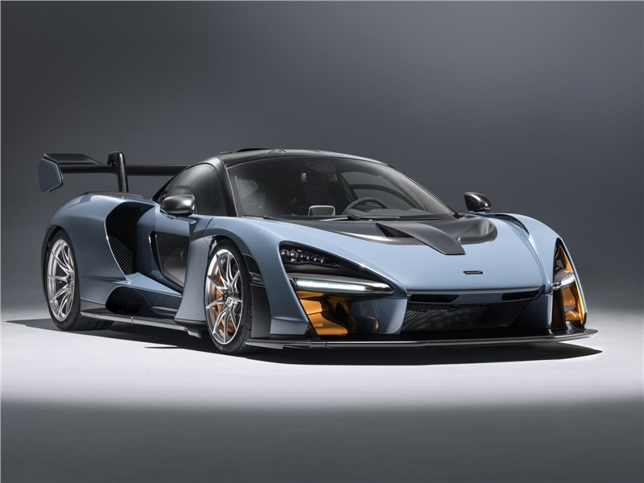

Компания McLaren была основана в 1963 году новозеландским гонщиком Формулы-1 Брюсом Маклареном
и американцем Тедом Майером, которые зарегистрировали Bruce McLaren Motor Racing Ltd для участия в автогоночной серии
Тасман в Новой Зеландии. Брюс Макларен выиграл чемпионат 1963 года, а последующие два года провёл в Формуле-1 в качестве
пилота команды Купер. Дебютом в Формуле-1 для собственной команды McLaren стал Гран-при Монако 1966 года.

McLaren F1 стал воплощением мастерства и инноваций, представленным в мире автомобилестроения. Его аэродинамические решения и инженерные технологии, включая использование углепластика и титана, сделали его не только самым быстрым серийным автомобилем своего времени, но и предметом восхищения искусства автодизайна.
McLaren P1, обладая мощным бензиновым двигателем и электрическим мотором, демонстрировал новые горизонты возможностей в области гибридных автомобилей, объединяя в себе эффективность, производительность и экологическую осознанность.
McLaren 720S, с его уникальным дизайном и передовыми инженерными решениями, установил новые стандарты в сегменте суперкаров, подтверждая репутацию McLaren как лидера в инновациях и динамике.
McLaren Speedtail, со своей потрясающей аэродинамикой и смелым дизайном, стал воплощением идеи о современном гиперкаре, объединяющем высокую скорость, роскошь и инновационные технологии.
McLaren Senna, названный в честь великого бразильского гонщика, поражал своими характеристиками и способностями на треке, устанавливая новые стандарты в области аэродинамики и динамики.
McLaren 570S стал символом доступности и производительности в семействе McLaren, предлагая клиентам возможность испытать мощь и элегантность бренда по более доступной цене.

McLaren MP4-12C, первый серийный автомобиль, разработанный компанией самостоятельно после завершения сотрудничества с Mercedes-Benz, продемонстрировал высокий уровень инженерного мастерства и технологических инноваций, укрепляя позиции бренда на мировом рынке суперкаров.
McLaren был основан в 1963 году Брюсом Маклареном и Тедом Маклиром в Вокинге, Суррей, Англия.